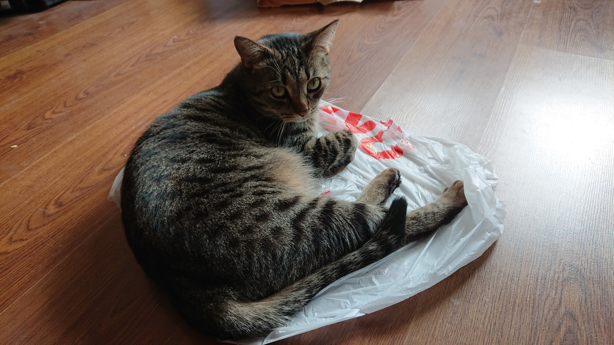

Любимый корм Зевса - сухой, хотя ему полезнее кушать влажный корм.

Любимый корм Зевса - сухой, хотя ему полезнее кушать влажный корм.

Любимое занятие Зевса - это, конечно же, кушать. Однако он, как все коты, любит и поспать.
А любимой игрушки у Зевса нет, как таковой. Но ему нравится иногда погоняться за мячиком или пошуршать в пакете.
